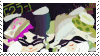

sneek's realm
a delightful lil minimalist website! i think the aesthetics of it are really cute and just a lil silly
highlights include creations and the notebook; i think sneek has a really nice writing style that i enjoy big style
Rh0mbus0fruin
Super cool aesthetic, reminiscent of that 90s-00s kinda eerie CGI. Has an extensive amount of shrines to look at. Highlight for me is the Robot and Monster shrine because I literally forgot that it existed until then. Also, Chicken Little Hell.
ADVERTISEMENT
Are you over 18? Do you enjoy coding websites, or want to learn how to? Then join the 32 BIT CAFÉ!
From personal experience, having been a part of it since this humble spacecraft took flight, I can highly say this is one of the most supportive communities on the internet. Everyone there is delightful, helpful and incredibly creative!
Pull up a chair and grab a coffee (or a tea, or a hot chocolate) with us!
Vampire's Nest
This was the inspiration that made me realize I need to get more nasty with my site design. Some absolutely INCREDIBLE art and site layout. You can see the passion they have in their interests and it is inspiring! Personal favorites include Readz, Ecology, Animal Jam shrine, and the OC page!
museum of alexandra
i can confidently say that every iteration of xandra's website is an absolute treat. it's minimal but still maintains a distinct personality. i love the art gallery and the hall of favorites! xandra herself is also super nice and friendly, love her :)
Vega Collective
Vega Collective is one of those things that you just can't describe adequately or even artistically emulate; you just gotta see it to believe it. Probably one of the coolest websites out there; it has this disturbing quality to it and really makes you understand the limitations of your own flesh.
Universe Be With U.

DIMDEN
Such a cool website with a ton of hidden secrets lying about! I love the cyberpunk aesthetic it has; really reminds me of VA-11 Hall-A. The About Me and the Photo Album are some of my favs from that site. They are also the creator of Nekoweb, which is neato!!

manyface
i think there is no other way to describe their website other than that it is a sanctuary to art. it seems every artform they touch is skillfully mastered and done with excellence-- i'm particuarly fond of the photography and poetry sections. i really enjoy The Russian Dream and The Rejoicer; i'm nothing but a whore for art that is specific to only one person's experience yet still relatable.

#NENRIKIDO
What a cute website!! This was one of the first websites I looked at when I was getting into Neocities, and it still amazes me. It has a kind of Tumblr custom theme vibe to it (in the best way possible). Also it is the responsive layout DREAM (perhaps something I should learn lol).

Mental Labour
Quite a simplistic website, but I really enjoy his insights and his writings. Very NSFW work, but I really love the vulnerability of this piece. I also just like the vibes of the Bookshelf. I always check this website over and over again, so I would recommend it!
shiny.exe
I LOVE POKEYMON!! the aesthetic is so good and i just love the vibes of the website, which i think is very apparent from the about page. the frienddex is shrimply delightful and one of the inspirations for this links page. highly recommend rummaging around!

sweetfish
such a nice website!! actually a major inspiration for this design; i love the newspaper-like appearance. i haven't fully went through it, but the games they've made are really cool!! always love checking out the checkout corner (pun intended) and seeing their recommendations. highly recommend!!

philia995
I thoroughly enjoy the aesthetic of this site. I'm not entirely sure what to call it, but it does feel very much like a PlayStation (and DS) game in terms of design (I guess that 2010s game aesthetic?). Love the photobook (put photography and I am HERE) and the Cloud Strife srhine.

getcubed
fellow kabru and pokémon enjoyer <3 really cute website and i like finding all the cats on there. really excited to see it develop over time.

FIZZSEA
This website was one of my main inspirations for creating my own website! I LOVE his art and the colors; very satisfying. Love spending time going through the Characters page. It's just really cool!!

ADVERTISEMENT
Back in 2015, I was obsessed with this Twitch streamer called Blue. He played Pokémon and Animal Crossing-- but I have like, no evidence that he existed minus him being a friend on my 3DS. I'd like to know if anyone remembers who he was and what happened to him? I knew he was Indian-Canadian and gay. Really reminds me of angry coconut on YouTube.
Feel free to email me at aster at 32bit dot cafe if you know anything.
Nickolox
I really love websites that are a deep and profound love for a character; and in this case, it's Waluigi! I really love the About and Minecraft shrine. The aesthetic is really cute and the art is super amazing.

The Absolute Realm

public transit
Doll Archive

myrrh

kit meow

trans rats
melxncholyman

vm70

gamera